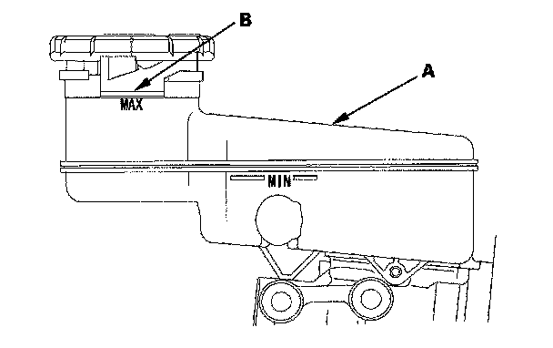
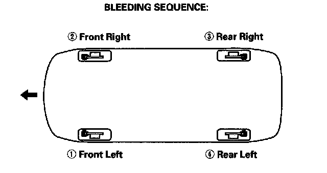
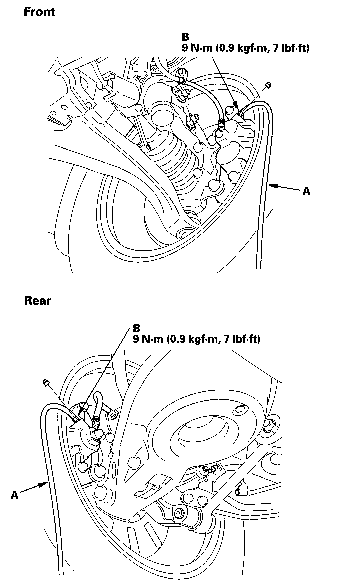

Brake Bleeding: Service and Repair
Brake System BleedingNOTE:
^ Do not reuse the drained fluid. Use only clean Acura DOT 3 Brake Fluid from an unopened container. Using a non-Acura brake fluid can cause corrosion and shorten the life of the system.
^ Do not mix different brands of brake fluid; they may not be compatible.
^ Make sure no dirt or other foreign matter is allowed to contaminate the brake fluid.
^ Do not spill brake fluid on the vehicle, it may damage the paint; if brake fluid does contact the paint, wash it off immediately with water.
^ The reservoir connected to the master cylinder must be at the MAX (upper) level mark at the start of the bleeding procedure and checked after bleeding each brake circuit. Add fluid as required.
1. Make sure the brake fluid level in the reservoir (A) is at the MAX (upper) level line (B).

2. Have someone slowly pump the brake pedal several times, then apply steady pressure.
3. Start the bleeding at the driver's side of the front brake system.
NOTE: Bleed the calipers or the wheel cylinders in the sequence shown.

4. Attach a length of clear drain tube (A) to the bleed screw (B), then, loosen the bleed screw to allow air to escape from the system. Then tighten the bleed screw securely.

5. Refill the master cylinder reservoir to the MAX (upper) level line.
6. Repeat the procedure for each brake circuit until there are no air bubbles are in the fluid.